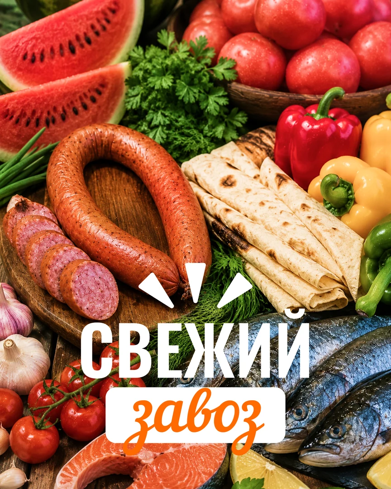
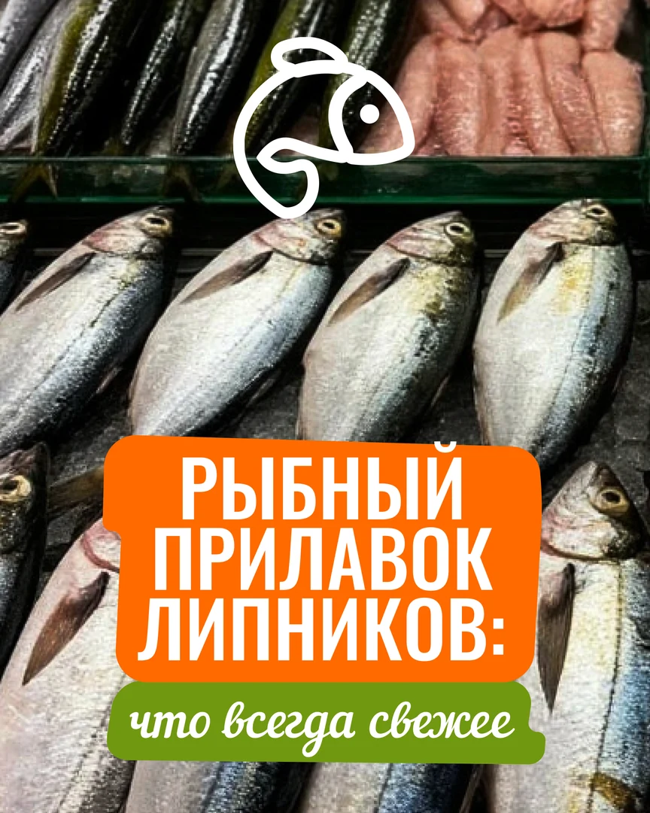
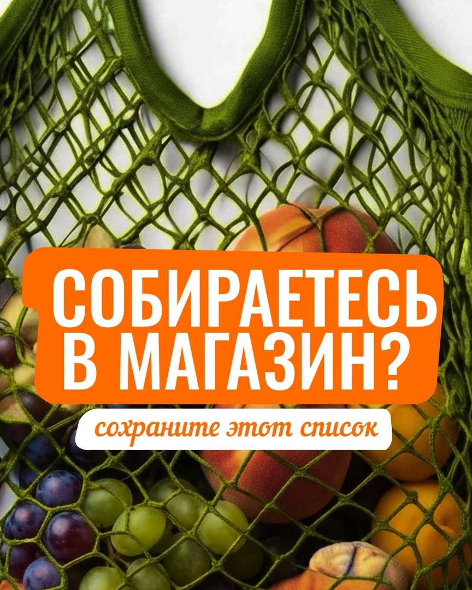

Локальный продуктовый магазин · MAX · август 2026
Как превратить прилавок в повод зайти сегодня
Для магазина «Липники» собрали не каталог товаров, а живой контент‑месяц: свежий завоз, полезные подсказки, выбор покупателей, сезонные поводы и готовые решения для ужина.
Полный финальный комплект10 публикаций, две основные карусели и одна подарочная — все изображения доступны внутри кейса.



Маркетинговая задача
Дать странице магазина ритм, а покупателю — понятную причину вернуться
Аккаунт уже существовал, но публикации выходили без структуры. Нужно было аккуратно оформить страницу, показать ассортимент и превратить ежедневные покупки в регулярный разговор с местной аудиторией.
Что важно покупателю
«Что свежее и что взять сегодня?»
Что привезли?
Как выбрать рыбу?
Что быстро приготовить?
Что взять на выходные?
Что есть в наличии?
Как отвечает контент
Показывает товар через бытовую ситуацию
Не просто «у нас есть рыба», а как выбрать свежую. Не просто «есть мясо», а что взять на горячее. Не просто сезонный товар, а повод зайти прямо сегодня.
Логика: увидеть → захотеть → сохранить → спросить наличие → прийти.
Баланс месяца
Четыре роли контента вместо десяти рекламных карточек
Витрина вызывает аппетит, польза даёт повод сохранить, вовлечение помогает узнать спрос, а предложение переводит внимание в покупку.
Витрина товара
Свежий завоз, своё мясо, рыбный прилавок и быстрые продукты на вечер.
Польза
Как выбрать свежую рыбу и что приготовить после смены.
Вовлечение
Что покупают чаще и что выберут на выходные.
Предложение
Хиты недели и сезонный повод зайти за арбузом.
Подарок сверх плана
Сохраняемый список покупок
Семь слайдов собирают мясо, рыбу, заморозку, хлеб, овощи и фрукты в короткий недельный чек‑лист. Такой материал возвращает магазин в поле зрения даже без прямой акции.
Продукт целиком
План, вся лента и три карусели
Все 28 финальных изображений показаны без обрезки. Переключайте разделы, листайте карусели и открывайте любой макет крупно.
10 выходов
От свежего завоза к удобной покупке на неделю
Темы чередуют аппетитную витрину, выбор, диалог, сезон и сохраняемые решения — без повторения одного оффера.
Основная лента
10 обложек в единой продуктовой системе
Для каруселей показаны первые слайды. Нажмите на любой макет, чтобы рассмотреть его крупно.
Публикация 06 · 6 финальных слайдов
Быстрые ужины после смены
Ситуация «нет сил готовить» превращает продукты с прилавка в готовое решение и повод сохранить материал.
1 / 6
Публикация 08 · 7 слайдов
Рыбный прилавок Липников
Вместо общего слова «рыба» — конкретные варианты под засолку, запекание, котлеты и быстрый ужин.
1 / 7
Подарок · 7 слайдов
Список покупок на неделю
Полезный чек‑лист дополняет основной план, стимулирует сохранения и напоминает о магазине перед следующим походом за продуктами.
1 / 7
От страницы без структуры к системе
Товар стал контентом с разными задачами
Фотографии продуктов усилили, сезонные цены убрали из финальных макетов, а ассортимент разложили по ситуациям покупки.
- 01Собрали ассортимент и бытовые сценарии
Свежий завоз, рыба, мясо, сезон, выходные и быстрый ужин.
- 02Разделили темы по ролям
Витрина, польза, вовлечение и предложения чередуются в одном месяце.
- 03Усилили реальные фотографии
Продукты выглядят ярко и аппетитно, а крупные заголовки читаются в ленте.
- 04Собрали три листаемых продукта
Две карусели в плане и один сохраняемый подарок сверх него.
- 05Подготовили комплект к загрузке
10 публикаций и 28 изображений собраны в финальную структуру.
Почему это работает для локального магазина
Контент привязан к моменту покупки, а не к абстрактному бренду
У местного магазина короткий путь до действия. Человеку достаточно увидеть знакомую задачу, понять выбор и спросить, что есть сегодня.
Свежесть и сезон
Завоз и арбузы создают повод зайти сейчас, не откладывая.
Полезная подсказка
Чек‑лист свежей рыбы снижает сомнение у прилавка.
Местный спрос
Опросы помогают понять, что аудитория покупает чаще.
Сохранение
Ужины и список покупок возвращают к странице на неделе.
Границы доказательств
Показываем готовый продукт — не придумываем продажи
По кейсу можно оценить стратегию, визуальную систему, тексты и полный комплект. Публикацию и коммерческий эффект не называем подтверждёнными без отдельной аналитики.
Что подтверждено
- 10 публикаций для MAX;
- 8 одиночных макетов;
- 2 основные карусели — 6 и 7 слайдов;
- подарочная карусель из 7 слайдов;
- 28 изображений в финальном комплекте.
Чего мы не заявляем
На странице нет выдуманных охватов, обращений, продаж или окупаемости. Материалы не называются опубликованными без отдельного подтверждения запуска.
Исторические цены из контент‑плана не вынесены в кейс и не показаны в финальных макетах.
У вас тоже локальный магазин?
Соберём ассортимент в понятный месяц контента
Маркетолог выстроит рубрики и путь к покупке, команда подготовит тексты и дизайн, а менеджер соберёт всё в один процесс.